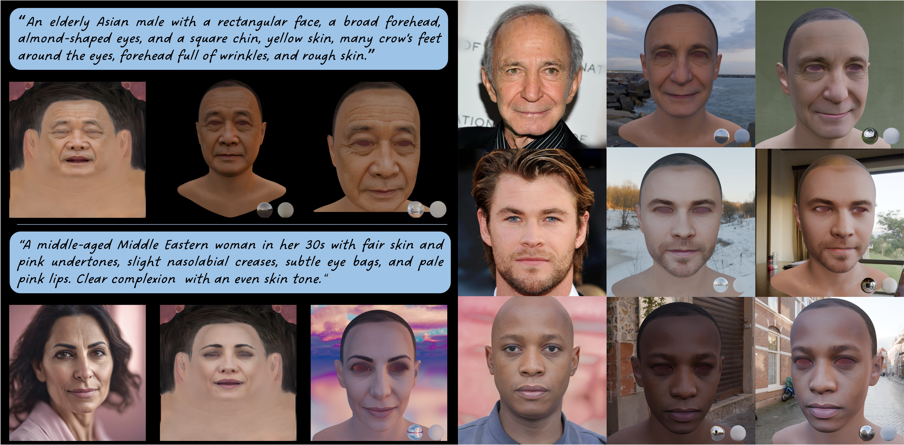
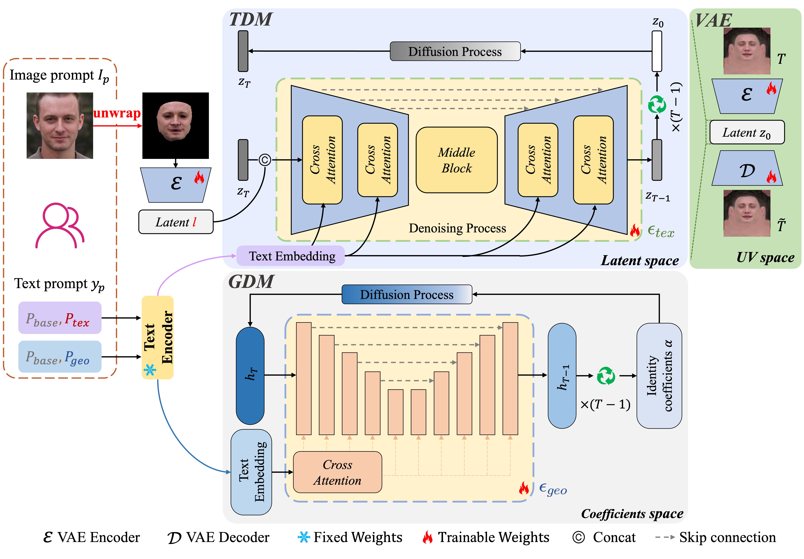
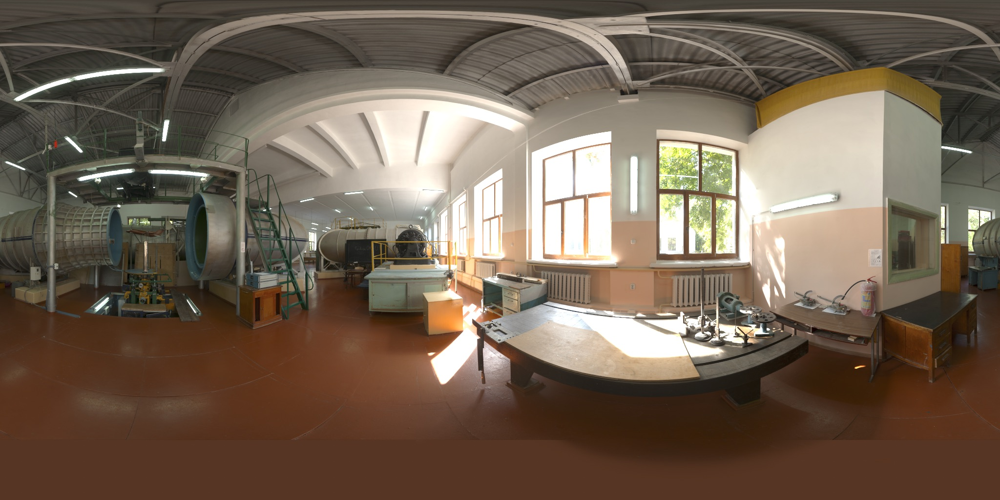
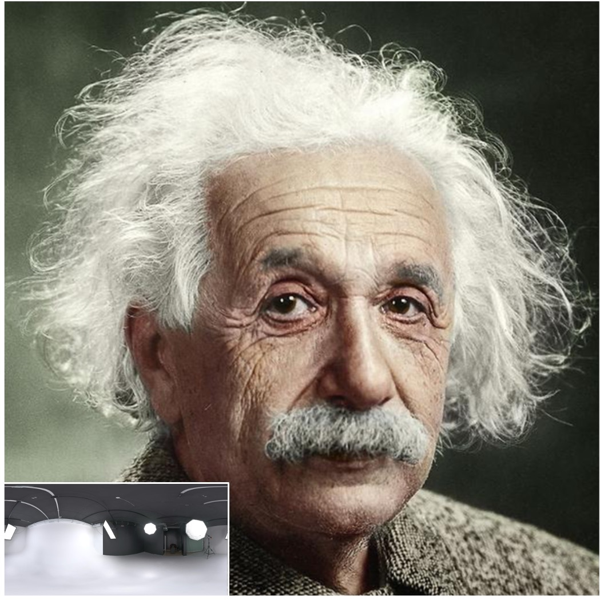

🧙♂️ PromptAvatar: Text-Image Prompted Generation of 3D Animatable Avatars
Anonymous AAAI Submission Paper ID 10093 Supplementary Material

PromptAvatar generates realistic and animatable 3D avatars from a single text prompt, image, or both, compatible with 3D rendering engines like Blender. The top-left corner uses a text prompt to create an accurate texture UV-map and mesh. The bottom-left corner combines text with an SDXL V1.0-generated image to guide high-quality texture UV-map creation. When an image prompt is used, facial geometry is extracted via a pre-trained 3D face reconstruction network. On the right, image prompts enable detailed texture effects like crow’s feet and beards.
Abstract
Recently, creating realistic and animatable 3D avatars through text or image prompts has drawn widespread attention. However, most of existing methods based on text input fall short in supporting fine-grained prompts due to their reliance on the Score Distillation Sampling (SDS) loss or CLIP for mapping text to images or 3D faces. Additionally, image-based approaches are severely limited by their dependence on expensive and scarce 3D facial data acquired through specialized equipment. These impact both model generalization and efficiency. To address these limitations, we introduce a novel, large-scale dataset comprising four modalities: detailed descriptions of facial attributes, face images captured in natural environments, high-quality texture UV maps, and facial shapes. Leveraging this dataset, we propose PromptAvatar, a framework integrating a texture diffusion model that supports multi-condition guidance from text or image prompts and a geometry diffusion model guided by text prompts. PromptAvatar can quickly generate an accurate and faithful 3D facial UV map and its geometry in seconds based on a text or image prompt, ensuring compatibility with existing rendering engines. Our extensive qualitative and quantitative experiments demonstrate the superior efficiency, diversity, and quality of PromptAvatar compared to existing methods. Additionally, we will release our dataset soon, fostering further advancements in this research.
Overview

Our dataset creation pipeline consists of three main modules: De-lighting and re-lighting face image generation, Incomplete UV-map correction and completion, and Identity coefficients estimation and facial attribute description.
PromptAvatar comprises a Texture Diffusion Model (TDM) and a Geometry Diffusion Model (GDM). The former reconstructs high-quality texture maps guided by text or image prompts, while the latter restores geometric identity coefficients guided by text prompts. The text is embedded by CLIP's text encoder and injected into TDM and GDM through cross-attention. From the image prompts, we extract the incomplete textures, encode them via VAE along with $z_t$, and feed them to the UNet of TDM to predict the Gaussian noise.
Results
All generated avatars are rendered in Blender.
Text to Avatar Generation
We directly use text prompts for TDM and GDM to generate textures and geometries respectively. To illustrate the generation quality, we relight each 3D avatar under various environment maps.

Visual comparison with DreamFace and Describe3D. Our results demonstrate superior alignment with fine-grained text prompts (highlighted in red). For instance, in the first row, see the distribution of facial hair, eyebrow shape, and chin, and in the second row, see the facial shape, eye bags, and other features.
|  | |
|
|---|---|---|
"A man in his 30s with a Caucasian appearance has olive skin, facial hair around the mouth, chin, and jawline, an oval face shape, straight eyebrows, a prominent nose with a rounded tip, and a round chin." |
这是添加的文字 |
这是添加的文字 |
Image to Avatar Generation
We directly use image prompts for TDM to generate textures. The geometry is estimated by using Deep3D pre-trained based on HIFI3D++. To illustrate the generation quality, we relight each 3D avatar under various environment maps.

Visual comparison of the image-to-avatar methods. Each group consists of the original image, the re-lit PromptAvatar, and FFHQ-UV. It can be observed that our method is able to preserve more facial details and skin tone of the original image. Please zoom in for better visibility of the details.
|  | |
|
|---|---|---|
Animation